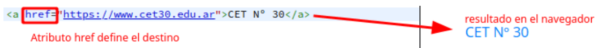

Una URL (Uniform Resource Locator) es una cadena de texto que indica donde puede encontrarse un recurso (página, imagen, sonido, video, etc) en Internet. También es conocido como Dirección Web o Enlace.

Una dirección URL absoluta contiene toda la información necesaria para localizar un recurso. Por ejemplo:
https://developer.mozilla.org/es/docs/Learn
Una dirección URL relativa localiza un recurso mediante una dirección URL absoluta como punto de partida. Por ejemplo:
Skills/Infrastructure/Understanding_URLs

Podemos diferenciar entre una URL absoluta y una URL relativa mirando solo la parte de ruta de la URL. Si la parte de ruta de la URL comienza con el carácter "/", se trata de una URL relativa, y el navegador buscará ese recurso desde la raíz superior del servidor, sin referencia al contexto dado por el documento actual. Si, en cambio, la parte de ruta comienza con el protocolo web (http/https) será una URL absoluta.
Un directorio es un tipo exclusivo de archivo que sólo contiene la información necesaria para acceder a archivos o a otros directorios. En otras palabras, es un contenedor virtual en el que se almacenan una agrupación de archivos y otros subdirectorios, accediendo a su contenido, a su proposito o a cualquier criterio que decida el usuario. Directorio es su nombre técnico, pero es comúnmente conocido como "carpeta"

El directorio raíz es el directorio principal que, en los sistemas operativos, contiene todos los demás directorios y archivos, lo cuales operan con lo que se conoce como un sistema jerárquico y se designan con una barra diagonal y/o inclinada (/).

https://campus.cet30.edu.ar/documentos/excel/datos_estudiantes.xls
https://xyzlt.com/data/asset/img/logo.gif
La etiqueta anchor nos permite crear un enlace (hipervínculo) a otra página web y/o un recurso ubicado en el mismo proyecto u en otro servidor web. Este etiqueta es de mucha importancia ya que todos los enlaces se realizan con ella.

El atributo utilizado para especificar la URL a la que se debe enlazar se llama href

Si el atributo "href" en la etiqueta anchor está vacío, se creará un enlace de marcador de posición, que se parece a un enlace tradicional, pero que no dirige a algún lugar.
El atributo "target" especifica en donde desplegar la URL enlazada. Es un nombre (name of), o palabra clave (keyword for), un contexto de navegación (browsing context): una pestaña, ventana, o <iframe>.
Un enlace de hipertecto o hipervínculo es un texto que contiene un enlace a otras páginas, documentos, recursos, etc. Al hacer clic en él, accederemos automáticamente al enlace que contiene.
{kind=link}